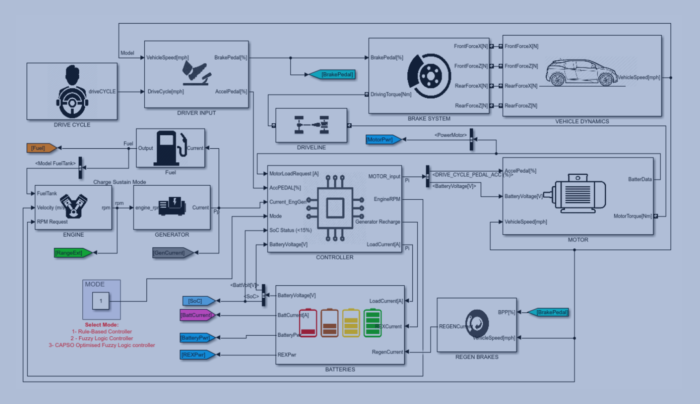

Environmental as well as economic issues provide a compelling impetus to develop clean, efficient, and sustainable vehicles. The promise for highly efficient, and low emission individual transportation is represented by Plug-In Hybrid-Electric Vehicles (PHEV), by shifting the demand from crude oil to electricity.
This paper presents an intelligent energy management strategy for a series PHEVs by developing a Fuzzy Logic Controller (FLC). A detailed description of developing a FLC, based on vehicle dynamics and internal power distribution, is provided. Fuzzy logic provides a suitable method for realising an optimal trade-off between the efficiencies of all components of the PHEV, however, this strategy provides limited sub-optimal solutions. Therefore, the FL control actions and rules, are developed using accelerated Particle Swarm Optimisation (PSO), to achieve global optimisation.
The objective of the PSO algorithm is to minimise the energy cost during vehicle operation whilst maintaining the battery’s State-of-Charge (SoC), therefore increasing fuel economy and system efficiency. The FLC is optimised offline using real vehicle data (BMW i3), to train the model. In order to validate the optimisation strategy, the PSO FL will be compared with other prominent optimisation strategies; Genetic Algorithm (GA), Simulated Annealing (SA), PSO and Pattern Search (PS) hybrid. An analysis on the fuel economy and system efficiency indicates PSO and PSO-PS outperforms GA and SA. PSO FL based strategy improves the range of the vehicle for the NEDC drive cycle by 3.49 % and the system efficiency increases by 8.9 %.

The image above shows top-level simulation of PHEV using Simulink MATLAB.